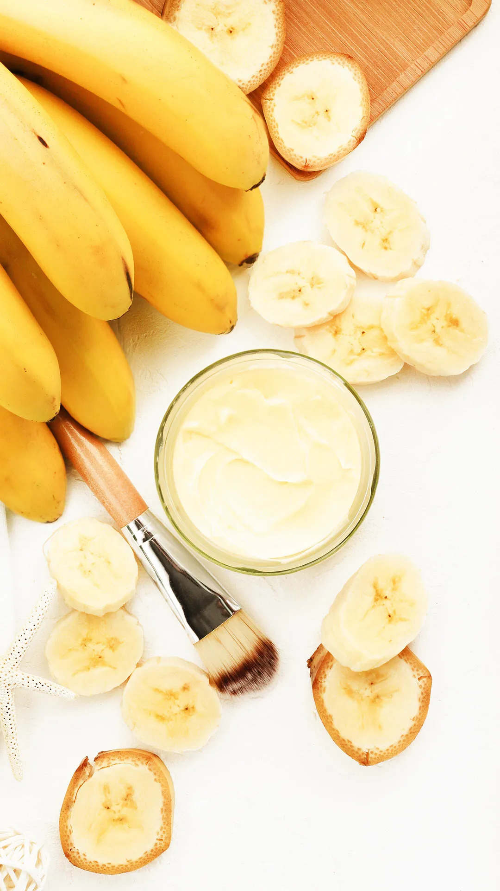
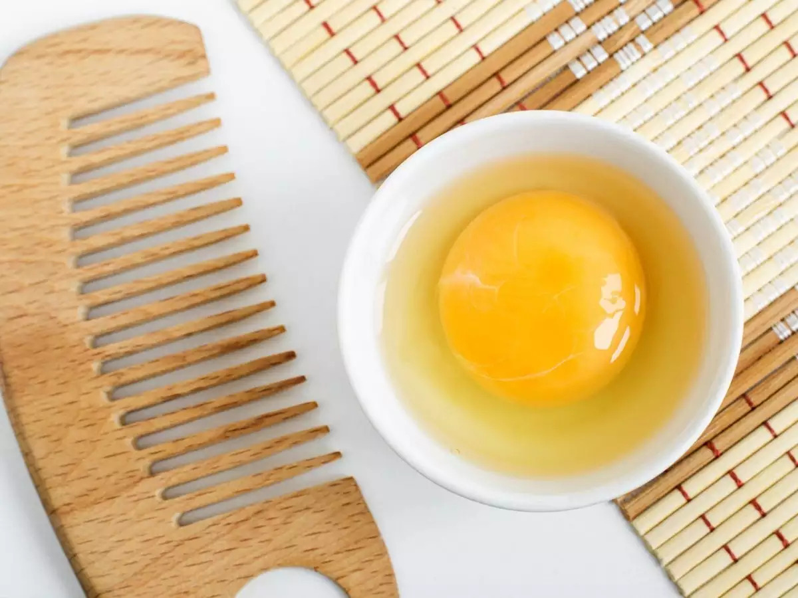
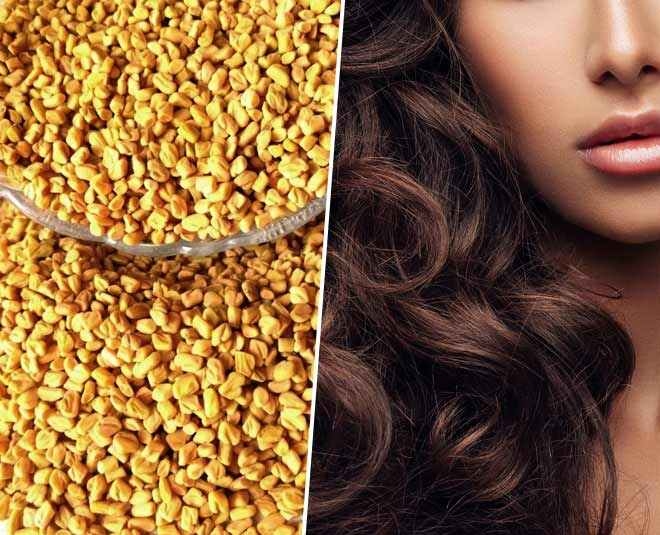
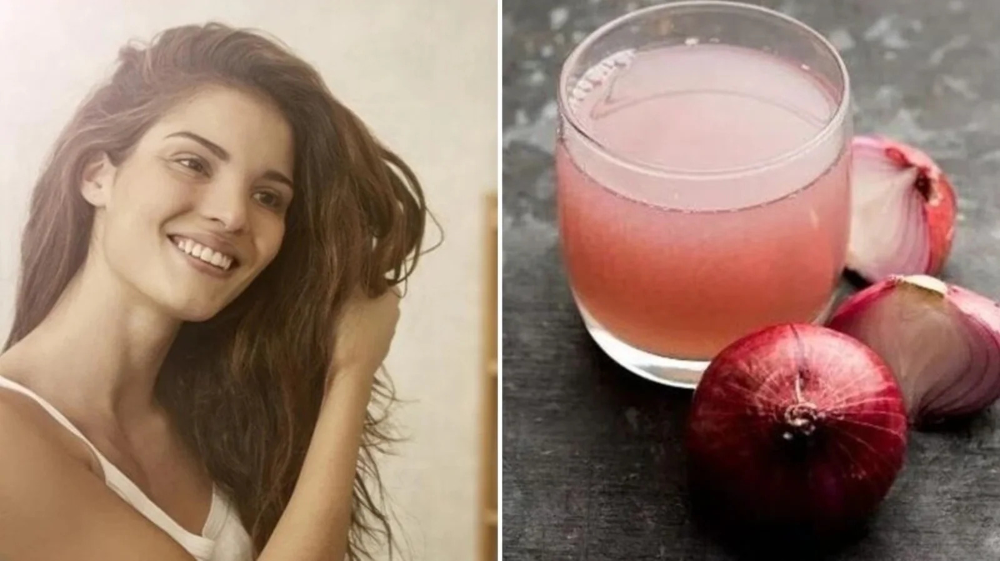

Causes of Hair Fall
1. Pollution
while living in cities has its perks,one can't escape from the exposure to consistent thick blankets of air pollution emitted from cars,trains and other public transports,causing treatable hair damage and hair fall.
2. Genetics
if your elders have a hair fall/bald patch history,its's likely for you to experience the same at some point in your life.
3. Stess
work and study hard, but don't compromise on your health.Lack of proper sleep and excessive stress contributes to severe hair loss.
4. Nutritional deficiencies
consistent neglect of vitamins,minerals,and a protein-rich diet affects the quality and quantity of hair on your scalp.
5. Hormonal Changes
Are you:
- Entering puberty
- pregnant
- undergoing menopause
- Taking birth control pills
- Experiencing thyroid?
if the answer to any of these questions is a yes,it's likely for you to collect uncountable broken hair strands from your immediate surroundings daily.
6.Diseases and medications
Certain autoimmune diseases like cancer,thyroid,arthritis and heart problems can contribute to consistent hair loss.some medicines like antidepressants,birth control pills,and mood stabillizers can also lead to hairlessness.
Note:
Strictly follow your doctor's medical advice on dosage intake.use natural remedies as safe shields to stop hair fall.
7.Tight Hairstyles
High ponytails and cornrow hairstyles undoubtedly make style statements but can cost youa ruthless shower of hair less.
Six Home Remedies for Hair Fall
1. Aloe Vera and Fenugreek Hair Mask
Fenugreek seeds contain a high protien content that is believed to be helpful in treating hair dryness,balding,and hair thinning as well as fighting hair loss and dandruff which goes very well with aloe vera.
How to Use Aloe Vera Hair Mask to Control Hair Fall
Step1 - Squeeze some aloe vera gel on your fingers and messages it on the scalp directly
Step2 - Rinse off the hair mask after an hour
Frequency: 2-3 times/week
2. Banana Hair Mask
Bananas are excellent cure for hair loss since they are high in pottasium,antisodium,natural oils.keep this mask for 5-7 minutes on your hair and rinse it.
How to Use Banana Hair Mask to Control Hair Fall
Step1 - Start by peeling and mashing the banana between your hands before putting into a bowl or blender,along with the honey
Step2 - Mix until the mixure is an even texture and consistency
Step3 - Apply the hair mask, paying special attention to your scalp and roots of your hair
Step4 - Leave in for 10-15
Frequency: Once a week
3. Egg Hair Mask
The vitamins and minerals presnt in eggs are beneficial for keeping your hair healthy.They are effective all types of hair and one can see early results.
How to Use Egg Hair Mask to Control for Hair Fall
Step1 - Mix 1 egg with a teaspoon of honey and olive oil
Step2 - Use a brush to apply the paste from roots to the tips
Step3 - Rinse after 25 minutes with a mild shampoo and in cold water
Frequency: Once a week
4. Methi Hair Mask
Methi is one of the biggest elixirs when it comes to healthy hair.They are rich in protien and help combat hair fall.This seed is known to promote scalp health,strengthen your roots, and repair and reverse damage.
How to Use Methi Hair Mask to for Hair Fall
Step1 - Soak some methi seeds overnight in hot water
Step2 - Grind it into a paste and apply it on your scalp and the lenghts of your hair
Step3 - Leave it on for half a day and then rinse off with water
Step4 - Do this every time you want to wash your hair
Frequency: Once a week
5. Onion Juice Hair Mask
Onion is also a great ingredient that promotes hair growth.The antibacterial properties present in one onion tackles scalp infections and helps improve the blood circulation.This often leads to healthy and happy hair.
How to Use Onion Juice Hair Mask to for Hair Fall
Step1 - Cut and grate one medium sized onion
Step2 - Sqeeze the juice out from the grated onion and apply it on your scalp with a cotton
Step3 - Leave the mask on for an hour,before washing it off.Follow this at least once a week for best results
Frequency: 2times/week
6. Green Tea Hair Cleanser to Control Hair Fall
Green tea can do more than waking you up every morning,calming down your stressed nerves,and reducing body fat.
How to Use Green Tea Hair Cleanser to Control Hair Fall
Step1 - Soak 1-2 green tea bags in a cup of hot water.Cover the lid
Step2 - Allow the tea to seep into the water for 5 minutes.Then allow the mixture to control
Step3 - Rinse off with water after an hour